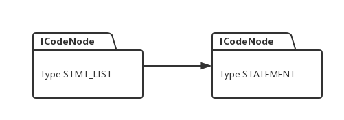

本节内容比较复杂，请通过视频查看代码讲解和演示：
用java开发编译器
我们已经成功解析了C语言的语法，接下来我们计划分两步走，一是开发一个C语言的解释器，也就是不编译，读取足够的源代码后直接执行。二是开发一个C语言的编译器，将C语言转换为java字节码，然后用java虚拟机来执行编译后的C程序。从这节开始，我们逐步实现解释器的开发。
要想直接执行C语言代码，我们需要在语法解析的过程中构造一种数据结构，叫语法执行树，其本质上也是一颗多叉树，有了这棵树，我们就可以遍历这个树，然后在合适的节点，执行某种动作，进而实现执行C语言源代码的效果，我们先看看树节点：

一般来说，每一个非终结符都会对应一个这样的节点，该节点中的Type就是非终结符的类型，Text用来存储解析对象的文本信息，如果解析对象是一个变量，那么Text对应的是变量名字符串，如果解析对象是数字例如123，那么Text的内容就是”123”, Symbol 对应的就是变量的符号对象，Value是对应对象解析后的值，假设该节点对应的是数字123，那么Value的值就是数值123，如果对应的是一个变量，例如int a, 并且变量a的值是1，那么Value的值就是整形数1.Children 指向子节点队列, Production 对应的是相关表达式的序号。
举个例子，对于语句：
a + b;
如果变量a 的值是1，变量b的值是2，该语句对应的语法表达式是：
BINARY -> BINARY + BINARY
该表达式的序号是94， 那么这条语句解析后，我们的程序会构造如下的一个树：
我们看看，给定下面一段代码，编译器是怎么构造一颗完整的执行树的：
void f() {
int a;
int b;
a = 1;
b = 2;
b = a + b;
}构造流程如下：
1： 解析器解析语句 int a; 然后根据表达式STATEMENT->LOCAL_DEFS进行递归，此时解析树构造一个节点类型为STATEMENT:
2: 解析器接着会根据 STMT_LIST->STATEMENT进行递归，此时生成新节点STMT_LIST, 然后把上面生成的节点当成该节点的子节点：

3: 解析语句 int b ; 同步骤1，根据表达式STATEMENT->LOCAL_DEF进行递归，然后构造类型为STATEMENT的节点：
4： 接着根据表达式STMT_LIST -> STMT_LIST STATEMENT递归，同时生成新节点STMT_LIST, 并形成下面形式的树结构：
5: 接着解析语句a = 1; 先把变量a 读入，然后根据表达式UNARY->NAME进行解析，接着生成一个UNARY的节点：
6：解析器会根据表达式 BINARY -> UNARY 进行递归，此时再次生成一个新的类型为BINARY的节点，并把上一节点当做自己的子节点:
7: 继续根据表达式NO_COMMA_EXPR -> BINARY递归，同时生成新节点NO_COMMA_EXPR, 并把上面节点当做子节点：
8: 读入等号后面的字符1, 它的解析流程跟步骤5，6，7是一样的，因此构造的语法执行树也是一样的：
9: 此时语句 a = 1; 已经全部读入解析器，于是可以根据表达式:
NO_COMMA_EXPR -> NO_COMMAR_EXPR EQUAL NO_COMMA_EXPR
进行推导，并生成新节点，且把步骤7和8生成的节点当做自己的子节点：
10： 接着根据表达式:
EXPR -> NO_COMMA_EXPR
STATEMENT->EXPR SEMI
STMT_LIST -> STMT_LIST STATEMENT
进行递归，并构造以下执行树：
11： 接下来要解析的是语句 b = 2, 解析和树的构造步骤与前面一模一样，所以生成的树结构如下：
12：接下来该解析语句 a = a + b 了，首先读入变量a,它的解析步骤和前面步骤5，6，7一模一样，因此也构造了相应的树结构：
节点STMT_LIST* 表示步骤11生成的树的根节点，为了避免图形过于繁杂，我将步骤11所构造的树用该节点来表示。
13： 接着读入等号后后面的变量a, 变量a 的解析跟步骤5，6是一样的，因此会形成下面的执行树：
14： 继续读入等号和变量b,b的解析跟步骤13一样，因此生成语法执行树如下：
15: 此时根据表达式：
BINARY -> BINARY PLUS BINARY进行递归，生成一个新的BINARY节点，然后将上面生成的节点作为子节点：
16: 解析器根据表达式：
NO_COMMA_EXPR -> BINARY 进行递归，同时构造如下执行树：
17： 继续根据表达式：
NO_COMMA_EXPR -> NO_COMMA_EXPR EQUAL NO_COMMA_EXPR
递归，并同理构造执行树：
18： 接着继续根据一系列表达式进行递归:
EXPR -> NO_COMMA_EXPR
STATEMENT -> EXPR SEMI
STMT_LIST -> STMT_LIST STATEMENT
最终构造的执行树如下：
有了这颗语法执行树后，在下一节，我们将看看，如何通过遍历这棵树，实现代码执行的效果。